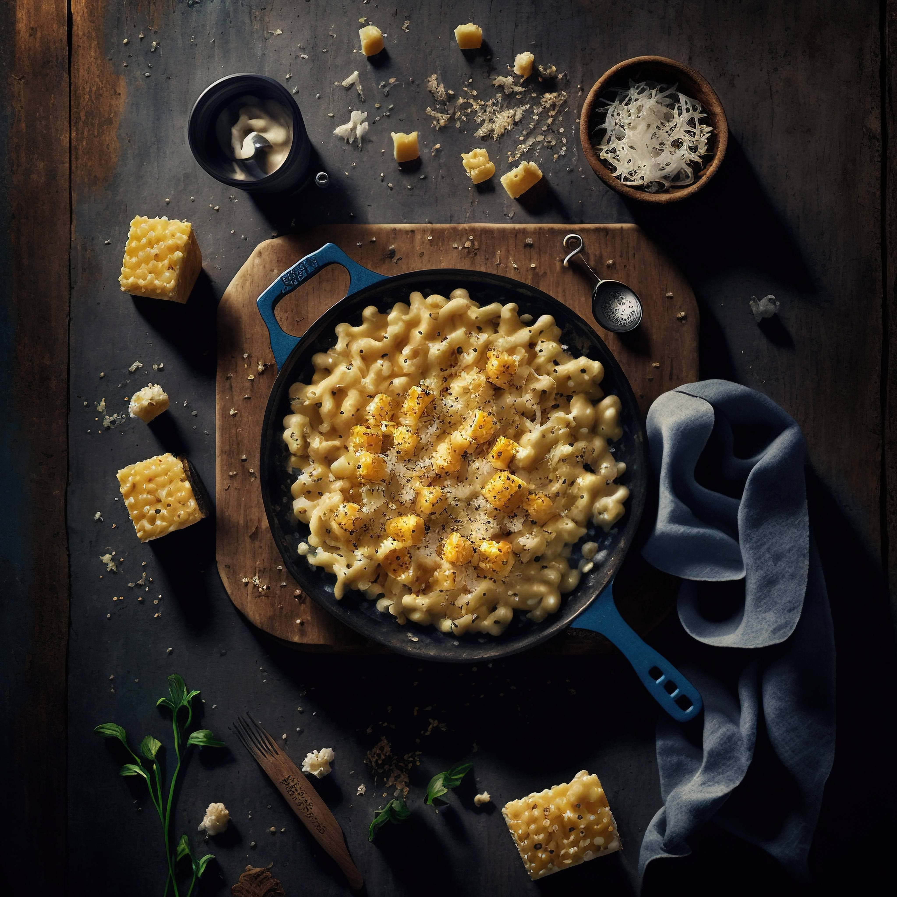

Seleción de 12 quesos madurados a su momento óptimo, para que sean los más fuertes que has probado jamás

Seleción de 12 quesos madurados a su momento óptimo, para que sean los más fuertes que has probado jamás
Este mac'n cheese te llevará a los verdaderos sabores del queso, con un cheddar madurado y parmeggiano reggiano fundidos mezclandose entre sí para dar la mejor combinación
Los quesos son a tu elección, puedes preguntar al personal que te recomiende algunos de ellos. Lo que de verdad importa en este plato además del queso, es el jamón de bellota procedente de cerdos criados en máxima libertad y con mucho amor, lo que hace que sepa mucho mejor